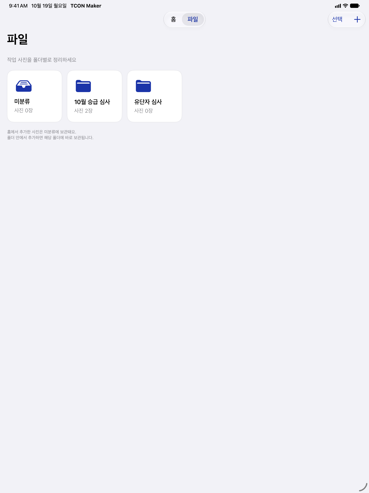
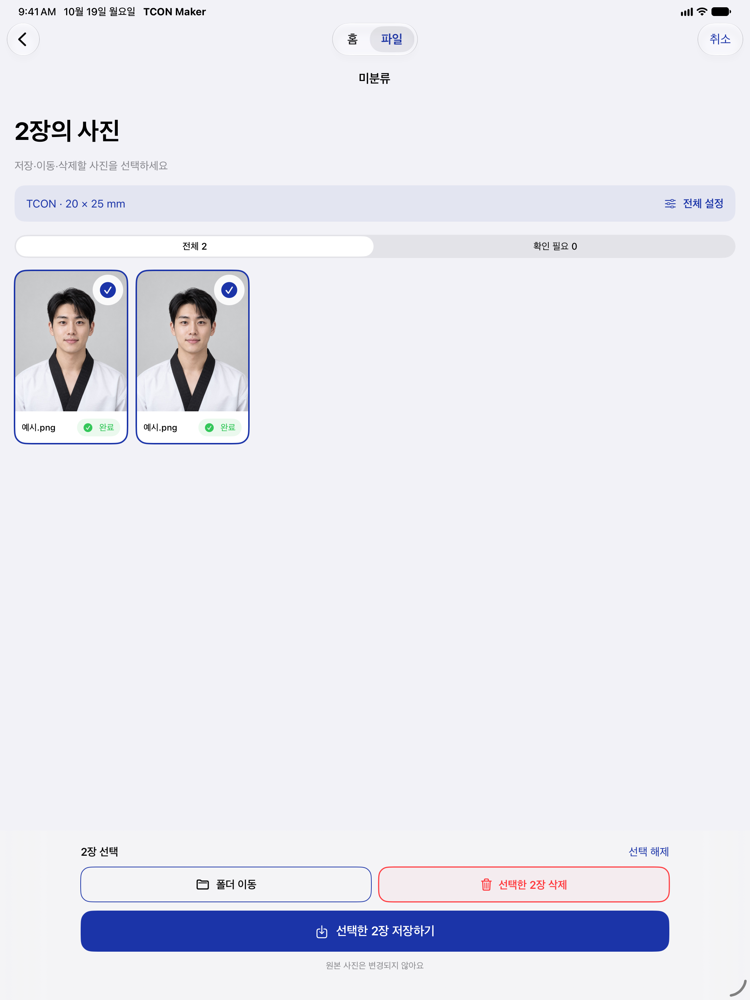
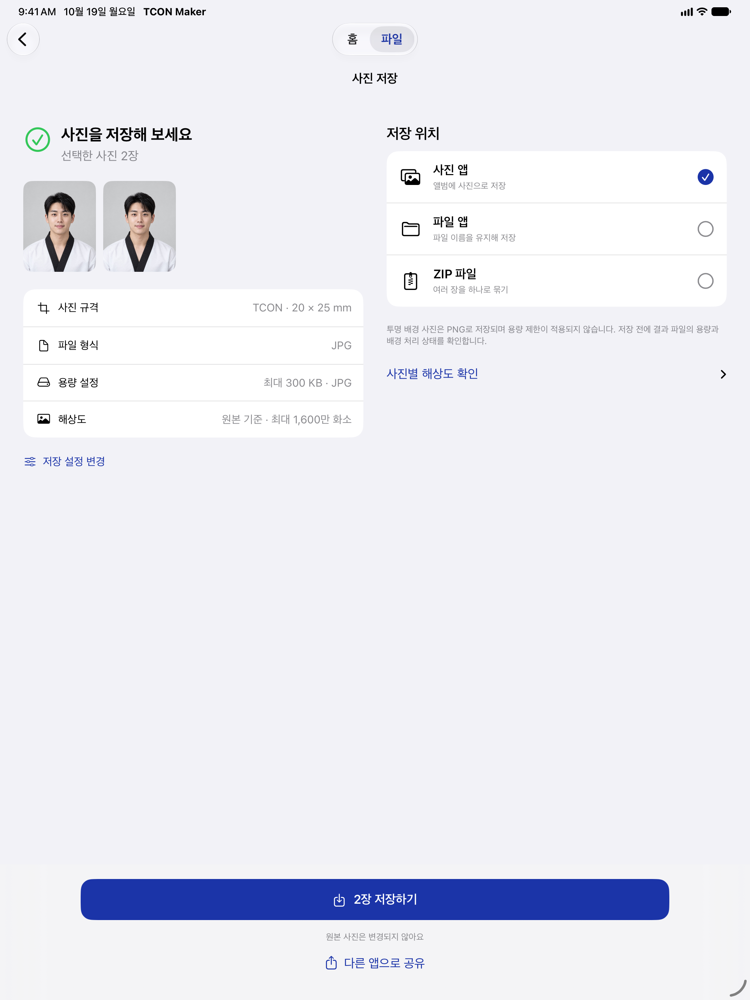
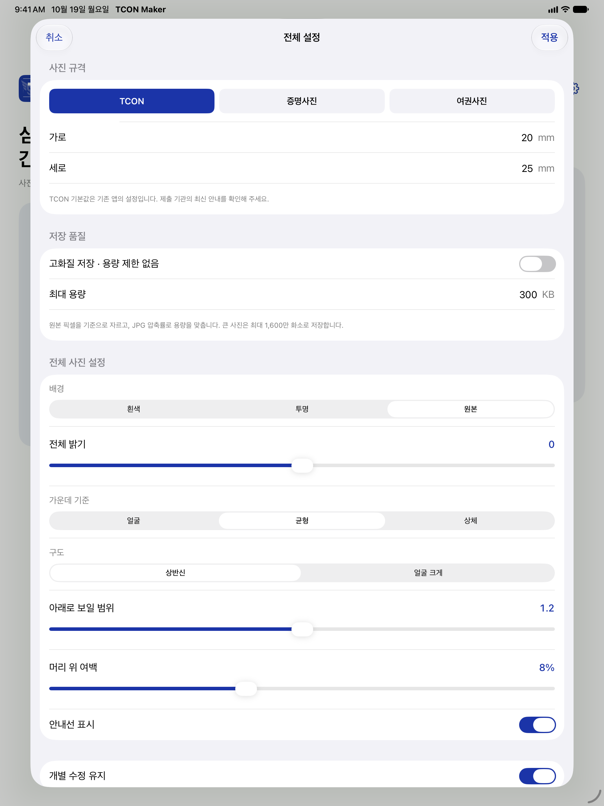
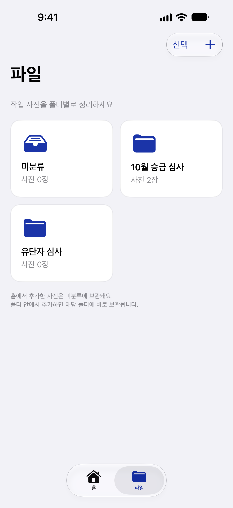
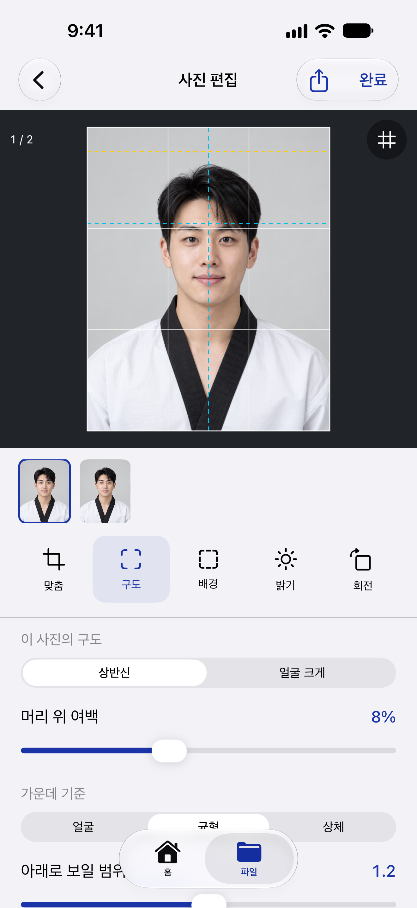
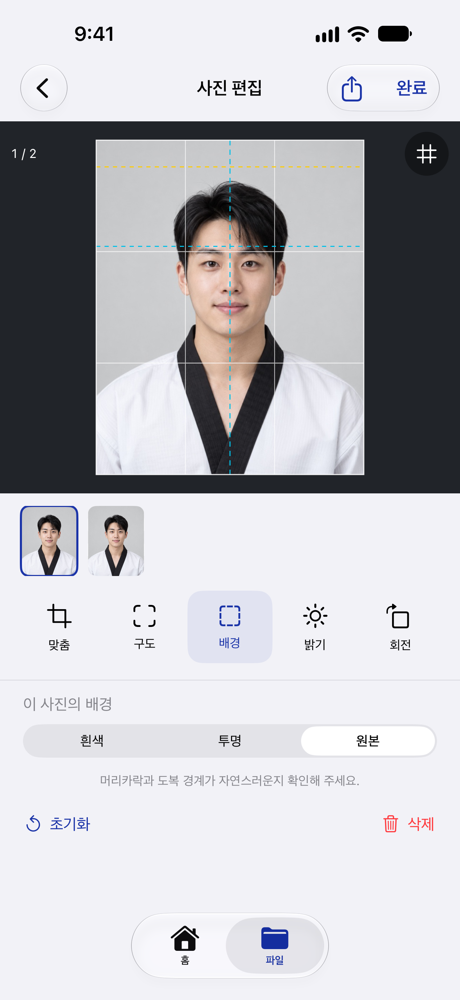
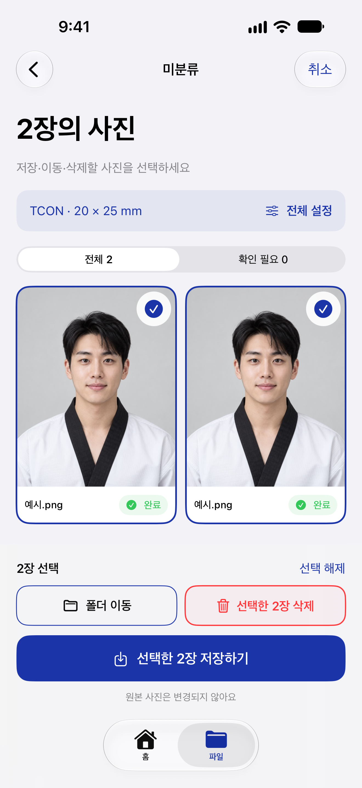
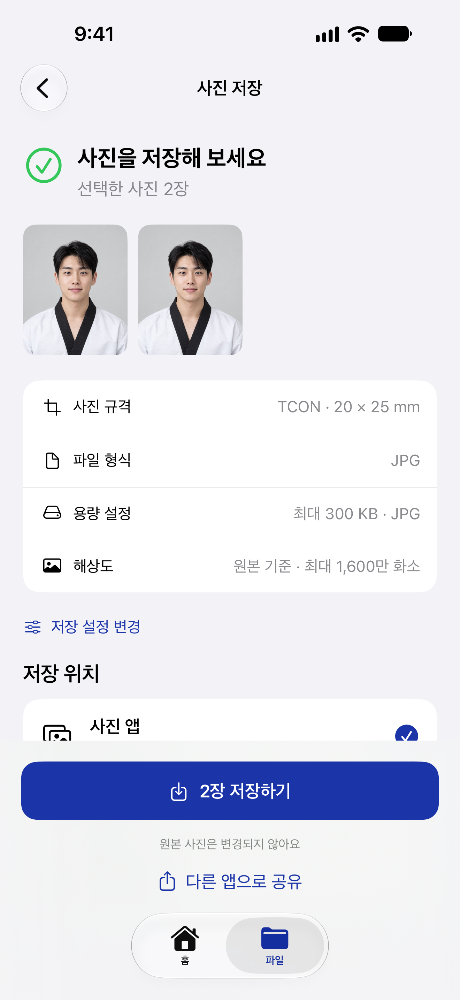
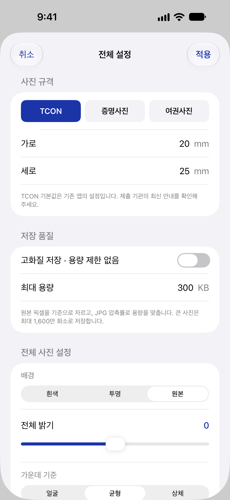

ko-KR/iPad-13-2064x2752/02-folders.pngko-KR/iPad-13-2064x2752/03-editor.pngko-KR/iPad-13-2064x2752/04-background.png
ko-KR/iPad-13-2064x2752/05-selection.png
ko-KR/iPad-13-2064x2752/06-export.png
ko-KR/iPad-13-2064x2752/07-settings.png ko-KR/iPad-13-2064x2752/08-home-actions.pngko-KR/iPhone-Large-1320x2868/01-home.png
ko-KR/iPad-13-2064x2752/08-home-actions.pngko-KR/iPhone-Large-1320x2868/01-home.png
ko-KR/iPhone-Large-1320x2868/02-folders.png
ko-KR/iPhone-Large-1320x2868/03-editor.png
ko-KR/iPhone-Large-1320x2868/04-background.png
ko-KR/iPhone-Large-1320x2868/05-selection.png
ko-KR/iPhone-Large-1320x2868/06-export.png
ko-KR/iPhone-Large-1320x2868/07-settings.pngko-KR/iPhone-Large-1320x2868/08-home-actions.png